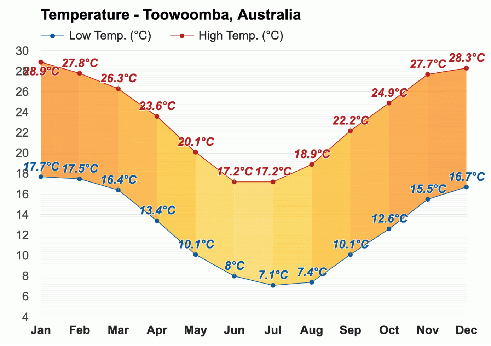
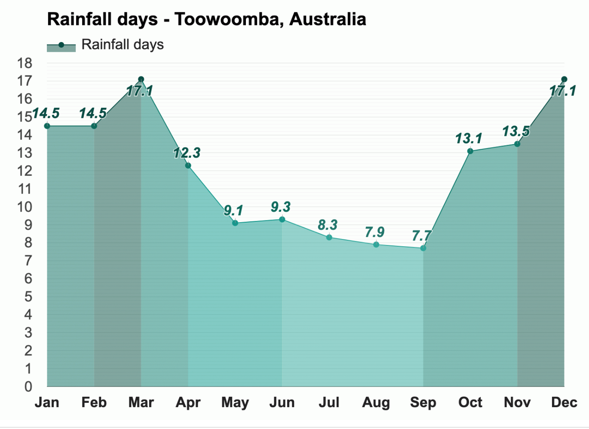
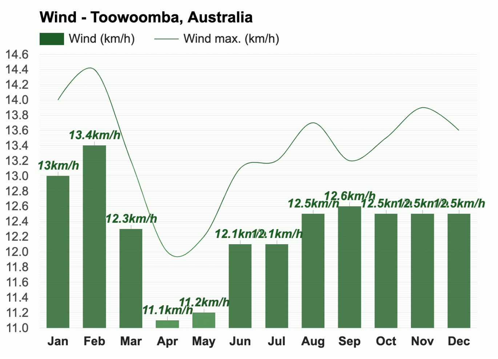

Temperature 
With an average high-temperature of 28.9°C (84°F) and an average low-temperature of 17.7°C (63.9°F), January is the warmest month in Toowoomba.
The coldest months are June and July, with an average high-temperature of 17.2°C (63°F).

With an average of 6.1h of sunshine, June has the least sunshine of the year in Toowoomba, Australia whereas November has the most sunshine of the year, with an average of 10.6h of sunshine.
Rain
Throughout the year, in Toowoomba, Australia, there are 144.4 rainfall days, and 509mm (20.04") of precipitation is accumulated.

With an average relative humidity of 80%, June is the most humid month. December is the month with the most rainfall in Toowoomba. Rain falls for 17.1 days and accumulates 74mm (2.91") of precipitation.
July is the month with the least rainfall in Toowoomba, Australia. Rain falls for 8.3 days and accumulates 13mm (0.51") of precipitation. September and November, with an average relative humidity of 68%, are the least humid months in Toowoomba, Australia.
Wind

* The above information is sourced from Weather-At. Take a visit for more information...
Population 173,204 (City)
Median Age 39
Ancestry
The most common ancestries in Toowoomba (R) were Australian 29.1%, English 27.8%, Irish 9.9%, German 8.1% and Scottish 7.8%.
Country of birth
81.0% of people were born in Australia. The most common countries of birth were England 2.0%, New Zealand 1.5%, India 0.8%, Philippines 0.7% and South Africa 0.5%.
Religion
In Toowoomba, Christianity was the largest religious group reported overall (74.1%).
The most common responses for religion in Toowoomba were Catholic 23.2%, No Religion, so described 20.0%, Anglican 19.0%, Not stated 9.2% and Uniting Church 5.9%.
* The above information is sourced from Australian Bureau of Statitics. Take a visit for more information...
Skate and BMX
Over the last 20 years there has been a significant growth in the interest and participation of action sports such as skateboarding and BMX.
Albury Skate Park
Thurgoona Skate Park
Springdale Heights Pump Track
Boat ramps
There are five boat ramps in the Albury region, with access to either the Murray River or Lake Hume. All ramps offer easy access to the water as well as nearby services.
Lake Hume Village Boat Ramp
Kremur Street
Mungabareena Reserve
Walking and cycling trails
Albury has more than 50 kilometres of interlinked on and off-road trails, offering walkers and cyclists of all ages, safe and enjoyable access to our natural environment and places of interest.
Heritage Walk
Nail Can Hill / Ridge Trail
Bungambrawatha Creek Trail
Rainforest Walk
* The above information is sourced from Albury City Government. Take a visit for more information...